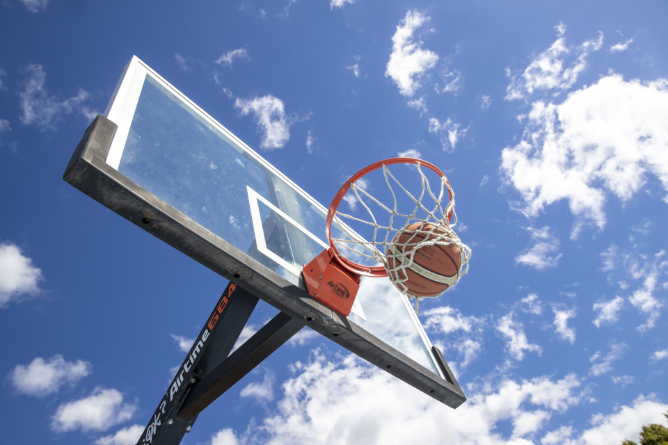
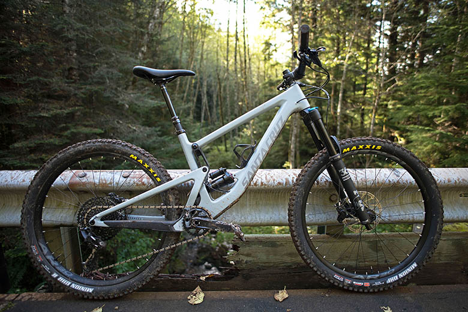

My favourite hobbies
Basketball
Basketball, my beloved hobby, is a passion that consumes me with its electrifying energy. With each dribble of the ball, I feel a surge of excitement and focus coursing through my veins. Whether I'm practicing alone, engaging in friendly matches with friends, or competing in organized leagues, basketball provides an avenue for me to push my limits and test my skills.It's not just about the physical exertion; basketball also teaches me discipline, teamwork, and resilience. The feeling of sinking perfect shot or making a seamless pass fills me with an indescribable sense of accomplishment. 
Cycling
Cycling takes me on a captivating journey through winding roads and scenic landscapes. As I pedal rhythmically, a sense of freedom envelopes me, and the world becomes my playground. With each rotation of the pedals, I feel a connection with the hum of the tires on the pavement and the gentle breeze against my face.Whether it's exploring new trails, embarking on long-distance rides, or simply commuting through the city, cycling allows me to immerse myself in the beauty of nature and discover hidden gems along the way. The physical exertion invigorates my body and clears my mind, providing a welcome escape from the stresses of daily life. 
Video games
Playing video games, particularly Counter-Strike Global Offensive, is a captivating hobby that transports me to thrilling virtual worlds. With a mouse in one hand and a keyboard beneath my fingertips, I immerse myself in the fast-paced, strategic gameplay of CS:GO. The intense firefights, tactical decision-making, and teamwork required in the game keep me engaged and exhilarated.Each match presents unique challenges, pushing me to hone my reflexes, communication skills, and adaptability. It's through CS:GO that I unlock my competitive spirit, enhance my problem-solving abilities, and experience the sheer joy of gaming.